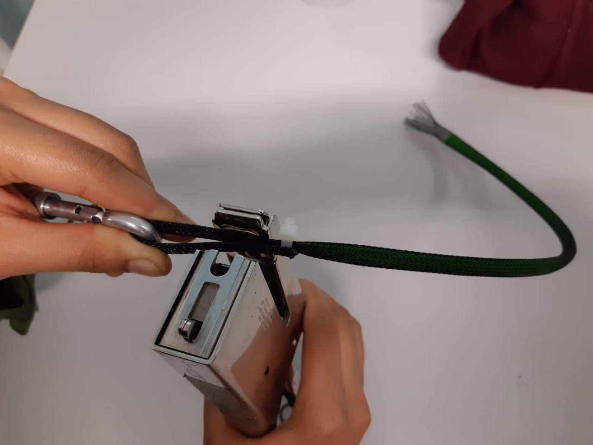

Metodología: - Elaborar un actuador neumático (visto en semana 8) dejando un espacio entre el final del globo pencil y la punta quemada. (Aproximadamente 10cm)
- Enrollar la punta quemada con el mosquetón
- Engrapar la parte final del actuador como se observa en la imagen

Experimento 6: Optimización del tamaño del actuador McKibben
Objetivo: Reconocer la relación entre longitud del actuador McKibben y su porcentaje de contracción para optimización del proyecto.
Materiales: - 3 actuadores McKibben de 10, 15 y 20 cm - Compresor de aire Werken o similar - Cables neumáticos
Metodología: - Se evaluó la relación entre la longitud efectiva del actuador McKibben y su porcentaje de contracción
Prueba 2: Brazo de 15 cm
Prueba 3: Brazo de 20 cm
Resultado: Mientras mas largo es el brazo mayor contracción va a ejercer , por ende mayor fuerza. Sin embargo, el tiempo de inflado también es mayor, lo que para nuestros fines prácticos es adverso
Experimento 7: Prototipo preliminar N°1
Objetivo: Probar el sistema de actuadores neumáticos junto a una compresora de aire en un miembro inferior para medir su efectividad